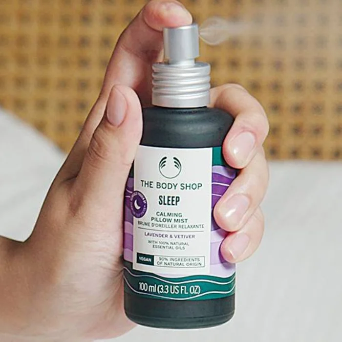

August 1, 2022 | Daily News | Sign In
From stress-induced insomnia, to a self-love crisis, the last couple of years have deepened wellbeing challenges for millions of people. More than ever, people are looking for wellness practices that help them unwind and cope with the pressures of life as well as give them that boost to take on the day ahead.
Combining 46 years of expertise in beauty rituals with a core activist philosophy that beauty must nurture the human spirit, The Body Shop launches newest wellness range.
For The Body Shop, wellness is so much more than a beauty trend, it's about helping people recharge, reconnect, and re-energize so they're ready to take on the world.
The wellness range is sourced in nature, developed by experts, with three transformative routines: Sleep, Boost and Breathe.
Vegan certified, the range is infused with powerful essential oils, carefully crafted into three new unique blends and tailored to vital needs. The sensorial textures elevate daily rituals and come in highly sustainable packaging, using premium glass and aluminium materials. Sleep: Sleep better, wake stronger. The pandemic and repeated lockdowns have had a catastrophic effect on many people's ability to regulate sleep. As such, the brand introduces a new aromatic, fragrantly floral Sleep range with highly sensorial textures and a comforting and relaxing scent. Enriched with 100 percent natural and biodegradable lavender and vetiver essential oils clinically proven to help one sleep better, the range includes the Sleep Hair and Body Wash, Sleep Balmy Body Cream, Sleep Calming Pillow Mist and Sleep Essential Oil.
Vegan certified, the range is infused with powerful essential oils, carefully crafted into three new unique blends and tailored to vital needs. The sensorial textures elevate daily rituals and come in highly sustainable packaging, using premium glass and aluminium materials. Sleep: Sleep better, wake stronger. The pandemic and repeated lockdowns have had a catastrophic effect on many people's ability to regulate sleep. As such, the brand introduces a new aromatic, fragrantly floral Sleep range with highly sensorial textures and a comforting and relaxing scent. Enriched with 100 percent natural and biodegradable lavender and vetiver essential oils clinically proven to help one sleep better, the range includes the Sleep Hair and Body Wash, Sleep Balmy Body Cream, Sleep Calming Pillow Mist and Sleep Essential Oil.